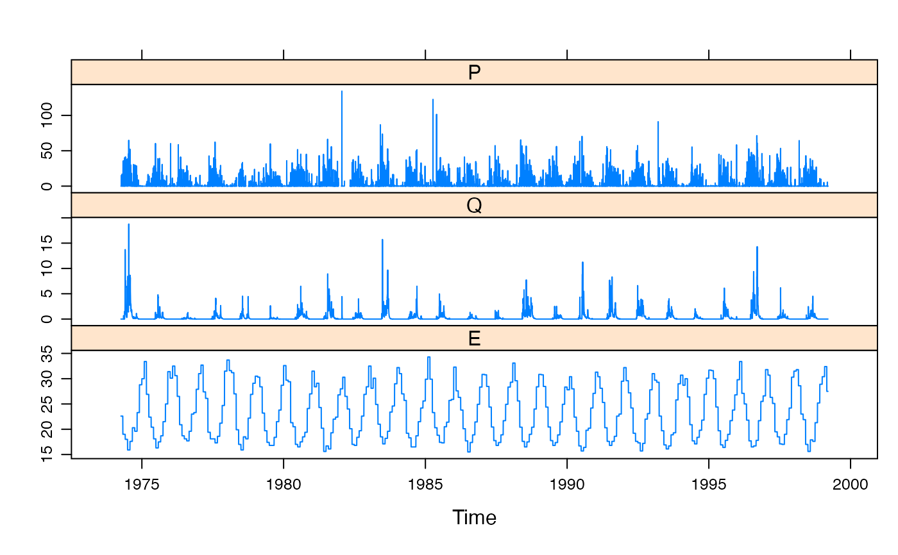

R/SalmonBrook.R
SalmonBrook.RdDaily rainfall and streamflow for Salmon Brook at Salmon Catchment (Western Australia), from 1974-04-06 to 1999-03-16. The catchment area is 0.83 square kilometers.
SalmonBrook
A zoo object, of class c("zooreg", "zoo"). It
is a regular time series indexed by days, in Date format.
There are three columns, P (rainfall, mm/day) and Q
(streamflow, mm/day). E (temperature, degrees C).
Water INformation (WIN) database - discrete sample data. [2009-07-09]. Department of Water, Water Information Provision section, Perth Western Australia.
Hydstra database - time-series data. [2009-07-09]. Department of Water, Water Information Provision section, Perth Western Australia.
Copyright (c) State of Western Australia (Department of Water).
Temperature: Copyright (c) Commonwealth of Australia. Created on Tue 07 Jul 2009 05:48:38 AM GMT from Climate Data Online, Bureau of Meteorology. http://www.bom.gov.au/climate/averages
Salmon Brook is located in the low-relief Darling Range of southwestern Western Australia. Evapotranspiration consumes about 90 per cent of the annual rainfall. The region is dominated by jarrah (Eucalyptus marginata) forest. Surface soils are predominantly highly permeable sands and gravels (Ye et al., 1997).
Daily rainfall (mm/day). Rain gauge station ID 509247 "SALMON BROOK @ SALMON CATCHMENT". Latitude -33.4157; Longitude 115.9846.
Daily mean streamflow (mm/day). Stream gauge ID 612011 "SALMON BROOK @ SALMON CATCHMENT". Latitude -33.4176; Longitude 115.9817.
Mean Maximum Temperature Climate Data. Product code: IDCJAC0002 reference: 00232595.Bureau of Meteorology station number: 9534 Station name: DONNYBROOK Latitude -33.57; Longitude 115.82; Altitude 63m.
Ye, W., B. C. Bates, N. R. Viney, M. Sivapalan and A. J. Jakeman (1997). Performance of conceptual rainfall-runoff models in low-yielding ephemeral catchments, Water Resources Research 33, pp. 153--166.
#> Index P Q E #> Min. :1974-04-06 Min. : 0.00 Min. : 0.0000 Min. :15.50 #> 1st Qu.:1980-06-30 1st Qu.: 0.00 1st Qu.: 0.0000 1st Qu.:18.40 #> Median :1986-09-25 Median : 0.00 Median : 0.0000 Median :22.40 #> Mean :1986-09-25 Mean : 3.05 Mean : 0.3215 Mean :23.28 #> 3rd Qu.:1992-12-19 3rd Qu.: 1.20 3rd Qu.: 0.1883 3rd Qu.:28.35 #> Max. :1999-03-16 Max. :134.40 Max. :18.7753 Max. :34.30 #> NA's :168xyplot(SalmonBrook)